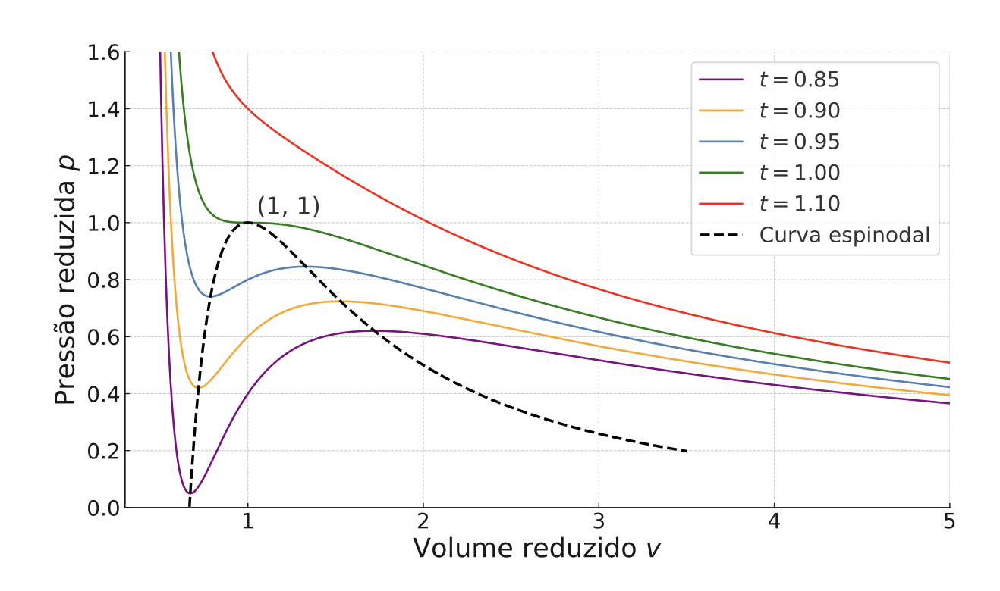

📏 Definições Reduzidas
Normalizamos as variáveis de estado em relação aos seus valores no ponto crítico para remover a dependência de parâmetros específicos.
Essas variáveis adimensionais permitem que substâncias com diferentes parâmetros a e b sejam comparadas na mesma escala.
🧪 Equação Universal
Ao substituir as definições na equação de van der Waals, os parâmetros específicos desaparecem, resultando na forma reduzida universal:

O gráfico mostra a pressão reduzida \(p\) em função do volume reduzido \(v\) para diferentes temperaturas reduzidas \(t\). O ponto crítico está em \((1,1)\); abaixo de \(t=1\), as isotermas cruzam a região delimitada pela curva espinodal tracejada.
Esta equação é válida para qualquer fluido que siga o modelo, independentemente de sua natureza química, desde que escalonado por \(P_c, V_c, T_c\).
⚖️ Fator de compressibilidade
O fator de compressibilidade \(Z\) quantifica o desvio de um gás real em relação ao comportamento ideal.
Para um gás ideal, \(Z = 1\) em qualquer estado. Para fluidos reais, \(Z\) varia com temperatura, pressão e volume, e \(Z_c\) resume o comportamento no ponto crítico.
Desvios experimentais de \(Z_c\) indicam as limitações do modelo em capturar a geometria molecular real.